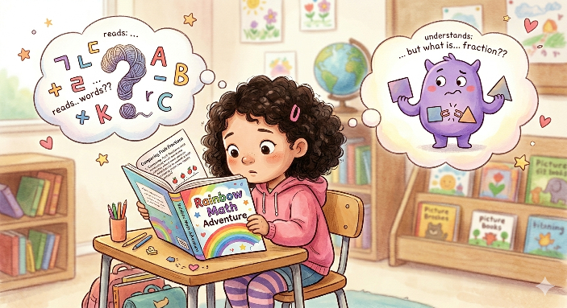

우리가 주목한 문제 영역

핵심 관찰: 다문화 가정 학생이 수학 문제를 "읽지 못해 틀리는 경우"와 개념을 "이해하지 못해 틀리는 경우"가 혼재되어 학습 격차가 심화되고 있습니다.
1.1 문제 영역 설명
교육/학습 영역 내에서 다문화 가정 초등학생이 한국 교과과정을 학습할 때 언어 장벽과 개념 이해 부족으로 인해 발생하는 격차에 주목합니다.
1.2 주목 배경
- 국내 다문화 가정 아동 수의 매년 증가세 대비 맞춤형 학습 지원 부족
- 사교육 접근성 저하 및 보호자의 한국어 교과 지도 한계
- 팀원들의 실제 교육 환경 접점 경험을 통한 문제 심각성 공감
사용자 정의
- 베트남어 사용 가정의 초등 1~6학년 학생
- 한국어 교과 설명에 어려움을 겪는 다문화 가정 부모님
- 방과 후 혼자 학습하며 언어적 도움을 받기 어려운 아동
저녁 시간 가정에서 수학 숙제를 하던 중, 지문의 뜻을 몰라 막히는 상황입니다. 부모님 또한 개념을 한국어로 설명해주기 어려워 외부 도움 없이 방치됩니다.
사용자의 행동과 불편
문제 가설 및 해결 방향
| 구분 | 가설 및 아이디어 내용 | 해결 방향 |
|---|---|---|
| 문제 가설 | 부모의 언어 장벽으로 인한 가정 내 학습 도움 부재 | 개념의 즉시 해결 불가 해소 |
| 해결 가설 | 이중언어 기반 개념 설명 및 실시간 챗봇 보조 | 수준별 개인화 설명 제공 |
아이디어 후보군
- 아이디어 1: 부모 튜터 역할 대행을 위한 이중언어 대화형 AI
- 아이디어 2: 학년·수준별 개인화된 쉬운 개념 설명
- 아이디어 3: 오답 원인 분석 및 데이터 기반 재설명
최종 선택 아이디어
결정: 아이디어 1, 2, 3을 통합한 "이중언어 대화형 AI 튜터"를 최종 선정하였습니다.
RAG(Retrieval-Augmented Generation)와 GPT 기반으로 MVP 구현이 가능합니다.
다문화 학생 수 증가에 따른 높은 공감대와 교육적 의미를 확보합니다.
다음 단계: 현황 분석 및 요구사항 정의서를 통해 가설을 검증하고, 초등 수학 특정 단원을 선정하여 MVP 범위를 확정할 예정입니다.